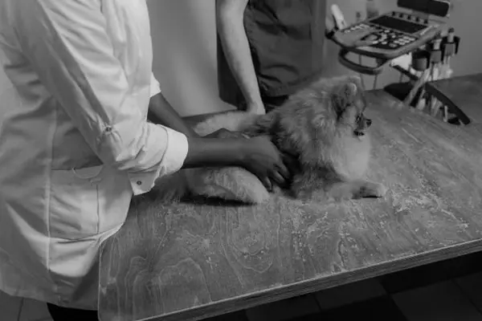

Before After
AfterMochi's Dental Recovery
3 weeks after a full dental cleaning, Mochi is back to bright-eyed and bushy-tailed.

A peek into daily life at the clinic — happy patients, happy teams, and the occasional nap on the job.


From quiet consultation rooms to our fully equipped surgical suite, every corner of Stackly is designed around comfort, safety, and exceptional veterinary care.


Real recoveries, real faces. These pets are now thriving.

BeforeAfter3 weeks after a full dental cleaning, Mochi is back to bright-eyed and bushy-tailed.
 Before
Before After
AfterFrom bandaged paw to playful prowler in just 10 days of follow-up care.
 Before
Before After
AfterA nervous first visit became a confident, healthy little explorer.
Behind every photograph is a moment of trust, comfort, courage, and connection.


We capture the little victories, the brave moments, the first visits, the happy returns, and everything in between.
Press play for a 60-second tour of our clinic, team, and very happy patients.
“The first photo after Max's surgery brought tears to our eyes. He looked so happy and comfortable.”
Recovery story“Luna normally hates the vet, but the team made her feel safe. This photo says everything.”
Happy visit“We love looking back at these little moments. They make every visit feel special.”
Pet parent moment